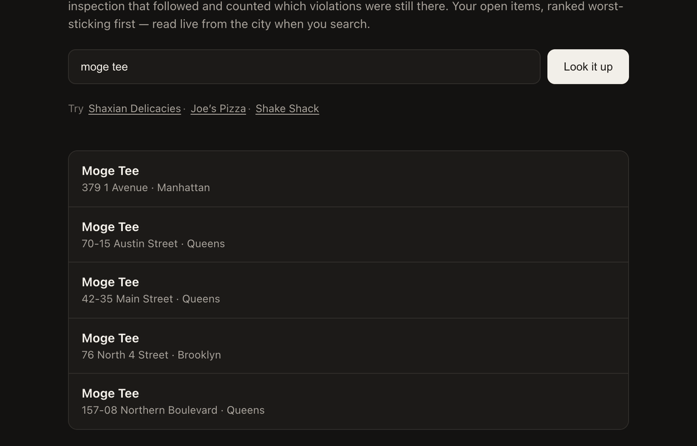
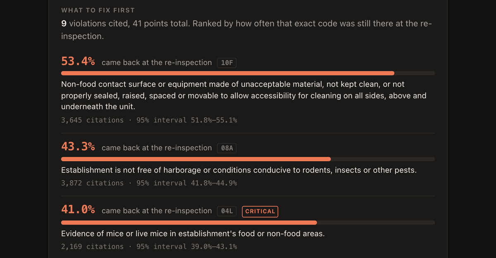

FreshRoute in five one-sentence beats — the person before the product, the product not named until Beat 4. Say each sentence aloud; rewrite any that don’t sound like you. The structure survives rewording.
The operator of a bubble-tea shop on Main Street in Flushing failed their health inspection five days ago, and tonight they are deciding what their crew fixes before a re-inspection they cannot schedule.
They have nine violations and 41 points but no idea where to start, because the city publishes each citation as a line on a list and never tells you which violations actually come back at the re-inspection.
Instead of splitting a week of crew time nine ways, they spend it on the three violations that citywide stay unfixed at the re-inspection most often — 53%, 43%, and 41% of the time.
They open FreshRoute’s inspection page, type the shop’s name, pick their address from the five that share it, and read their own city record ranked by how often each violation survived the re-inspection.

I’ll run that exact lookup live on the city’s data right now — when the record loads, watch the ranking appear with the mice violation everyone fears sitting third, under two items nobody in this room would have fixed first.

moge tee → Enter. Pick 42-35 Main Street · Queens.kingston pizza → the Kingston Avenue · Brooklyn row.demo_visible gate rejected it. “Watch the ranking
appear” is both compliant and better stagecraft.{kind=link}